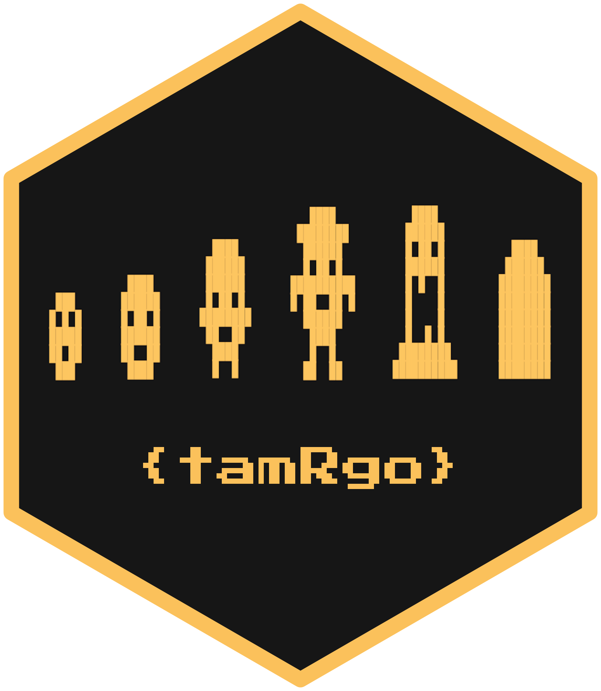

# install.packages("tamRgo") # if not yet installed
remotes::install_github("matt-dray/tamRgo")
library(tamRgo)
tl;dr
I’ve written the concept R package {tamRgo} to simulate a persistent digital pet in your R console, lol.
Had an oeuf?
R is a game engine1. Don’t @ me2.
Turns out that R can keep a ‘save state’: developers can write a persistent file to the platform-independent path on a user’s machine resolved by tools::R_user_dir()3.
Of course, I’ve used this to make a concept R package. {tamRgo} saves locally a ‘blueprint’ for a Tamgotchi-like digital pet4, which is read and updated when you interact with it in the R console.
Tamago (egg) + uotchi (‘watch’) = Tamagotchi. Tamago + R = {tamRgo}.
Nuovo uovo
Install
Use {remotes} to install the package from GitHub. There’s also an accompanying documentation website.
Welcome to {tamRgo}, a digital pet in the R console!
- Docs: <https://matt-dray.github.io/tamRgo>
- New pet: lay_egg()
- Then: get_stats(), see_pet(), play(), feed(), clean()It has no package dependencies, but you’ll need to be running a version of R greater than 4.0.
Of course, it’s just a toy to demonstrate a concept. I’ve built out a bit of a ‘game loop’, but it’s just for fun and the code is not optimised. Bugs guaranteed, so suggestions and code contributions are always welcome.
New pet
To begin, you’ll need to generate you new cyberpet5 by laying an egg. You’ll be asked to confirm it’s okay to save a blueprint file onto your computer, which is just a small list object stored as an RDS file.
lay_egg(pet_name = "KEVIN")Save pet blueprint? y/n: y
Saved pet blueprint.
You have a new egg... it hatched!
You can get_stats(), see_pet(), play(), feed(), clean().The blueprint will be saved at the location resolved by tools::R_user_dir("tamRgo", "data"). You can always release() your pet into the wild, which will delete the blueprint file.
So, you have a new pet. Now what? The hint suggests to check the stats, so let’s do that.
get_stats()Characteristics
Name: KEVIN
Species: Z
Age: 0
Level: 0 (newborn)
Alive: TRUE
Status
Happy: ■■■□□
Hungry: ■■■□□
Dirty: □□□□□ You can see some characteristics: the name you provided, the pet’s species (X, Y or Z) and their age (days since ‘birth’). You can see the pet’s level (whatever that means) and whether they are currently alive. There’s also status values, which are followed by five-point gauges, some of which are filled.
Let’s quickly check what our pet looks like with see_pet(). Its appearance depends on the species and the level; newborns are pretty much a blob, but your pet will grow and develop as it levels.
The rendering of the sprite, which is built with unicode block elements, will depend on the settings in your console. Your browser may also bork the the sprites as they appear in this post. See the package’s hex logo at the top of the page to get truer examples of the intended designs.
see_pet()░░░░░░░
░░███░░
░█░█░█░
░█████░
░██░██░
░░███░░
░░░░░░░Congratulations! KEVIN is a beautiful little chap.
Feed
Having just been born, KEVIN is a bit peckish. You can tell because the ‘Hungry’ gauge is partially filled. Let’s lower the value by using feed().
feed()'Hungry' status value is now 2/5See how the ‘Hungry’ counter decreased by 1 to 2?
get_stats()Characteristics
Name: KEVIN
Species: Z
Age: 0
Level: 0 (newborn)
Alive: TRUE
Status
Happy: ■■■□□
Hungry: ■■□□□
Dirty: □□□□□ Play
You can increase the ‘Happy’ value, which is currently 0, with play(). This begins a game of ‘higher or lower’ with user input. Yes, it’s not much of a skill-based game, but there’s a rumour that it’s easier under some circumstances and that a higher score is better for your pet’s wellbeing.
play()Higher or lower than 4? Type h or l: h
Wrong! It was 1. Score: 0/5.
Higher or lower than 1? Type h or l: h
Correct! It was 8. Score: 1/5.
Higher or lower than 4? Type h or l: h
Correct! It was 6. Score: 2/5.
Higher or lower than 6? Type h or l: l
Correct! It was 5. Score: 3/5.
Higher or lower than 7? Type h or l: l
Wrong! It was 10. Score: 3/5.
Result: you scored 3/5!
'Happy' status value is now 4/5Clean
After some time, your pet will become ‘dirty’, represented by a small pile of filth underneath their sprite.
see_pet()░░░░░░░
░░███░░
░█░█░█░
░█████░
░██░██░
░░███░░
░░░░░░░
░░░░░░░
░░░█░░░
░░███░░
░█████░
░░░░░░░Which is almost as big as KEVIN himself, wow. You’ll just need to clean() it away.
clean()'Dirty' status value is now 0/5Persistence
Perhaps the most important thing to know is that you can end your R session and come back later and your pet will still be available. In fact, it will continue to live and grow on your computer while you’re away.
Maybe you come back five days later. Here’s what you might see if you check your pet’s stats from any R session on your computer.
get_stats()Characteristics
Name: KEVIN
Species: Z
Age: 5
Level: 2 (youngling)
Alive: TRUE
Status
Happy: □□□□□ !
Hungry: ■■■■■ !
Dirty: ■■■■■ !Aha, so KEVIN’s age and level have increased since you’ve been away, even though you haven’t interacted with him for a while. But uh-oh, looks like his status values are at their worst.
Pay attention to these status values. Look after your pet! Apparently there’s a chance it might become… ‘unalive’. Rumour has it that good owners have longer-living pets…
Anyway, let’s quickly check KEVIN’s appearance now he’s level 2.
see_pet()░░░░░░░░░░
░░█░░░░█░░
░░░█░░█░░░
░░██████░░
░░█░██░█░░
░░██████░░
░███░░███░
░░██████░░
░░█░░░░█░░
░░░░░░░░░░
░░░░░░░
░░░█░░░
░░███░░
░█████░
░░░░░░░
░░░░░░░
░░░█░░░
░░███░░
░█████░
░░░░░░░
░░░░░░░
░░░█░░░
░░███░░
░█████░
░░░░░░░
░░░░░░░
░░░█░░░
░░███░░
░█████░
░░░░░░░
░░░░░░░
░░░█░░░
░░███░░
░█████░
░░░░░░░Erm, well, cool antennae, bro. Totally distracts from the mess. Might need to clean() him.
Under the shell
The underlying logic is pretty simple. I don’t want to give away too many spoilers, but it’s worth explaining some of the main components a bit.
Blueprint
The whole system is dependent on a ‘blueprint’ file, which is what gets stored at the tools::R_user_dir() location. It’s a list object with elements like the pet’s name, species (randomly generated), ‘date of birth’, accumulated XP, status values (happy, hungry, dirty) and some other things.
The blueprint is read and updated whenever you use a function from {tamRgo}. The current datetime is compared to the datetime of last interaction (stored in the blueprint) and the difference is used to calculate things like the pet’s age, XP accumulation and level and status values.
This gives the impression that the pet has been ‘alive’ on the player’s machine while they’ve been away. A trick6!
Experience
The main goal is to accumulate XP and keep your pet alive. XP:
- is accumulated passively every hour
- is gained from the minigame in
play(), where a higher score means more XP - will result in the pet levelling up when certain thresholds have been met, which alters their appearance
At a certain point, the pet will become ‘unalive’7. The chance of this happening is based on the pet’s accumulated XP. Basically:
- XP is ‘frozen’ at a certain age and the value is stored in the blueprint
- the chance of becoming unalive is tied to the frozen XP value, where more XP means a lower chance
- the number of days since the XP was frozen is used as a multiplier, so the chance of becoming unalive increases with time
The current XP count is stored in the blueprint, but is hidden from the user. This moves focus away from tracking and improving a single number and hopefully towards a more general goal of keeping your pet happy, well-fed and clean.
Sprites
There are character ‘sprites’ that change with age and species (see the image at the top of this post). The sprite for a newborn, mature and unalive pet are the same regardless of species, but the other levels are dependent on whether the pet is species X, Y or Z. Of course, these are pixellated to mimic the original Tamagotchi style.
{kind=link}
The sprites are called by see_pet() as binary matrices of filled and unfilled ‘pixels’. I wrote the package {pixeltrix}, which I wrote about in my last blog post for a simple interactive way to design sprites by turning pixels ‘on’ and ‘off’ in a plotting window. Here’s a preview of a totally original little cyberfriend being incepted.

Practical yolk
The package is not feature complete, lol8. To improve it, I could maybe9:
- animate the pixel graphics
- allow blueprints to be transferred between machines, so your pet can live across multiple devices10
- add a battle system like Digimon
- make the
play()minigame actually fun and so it grants more XP for greater skill - make more meaningful use of ‘hungry’ and ‘dirty’ statuses, perhaps include a hidden HP gauge that is reduced when these statuses are at their maximum for an extended period
The main point of this toy was for me to work out how to store data on a user’s machine. Should you actually do that? It depends. Can you use it in a silly R package for purposes of fun? Well, yes, if you ask me.
You can probably think of other ways to use tools::R_user_dir() for games in R, particularly for save states. Let me know when you’ve made a new triple-A game for R and I’ll add it to the list.
Environment
Session info
Last rendered: 2023-07-06 19:27:05 BSTR version 4.3.1 (2023-06-16)
Platform: aarch64-apple-darwin20 (64-bit)
Running under: macOS Ventura 13.2.1
Matrix products: default
BLAS: /Library/Frameworks/R.framework/Versions/4.3-arm64/Resources/lib/libRblas.0.dylib
LAPACK: /Library/Frameworks/R.framework/Versions/4.3-arm64/Resources/lib/libRlapack.dylib; LAPACK version 3.11.0
locale:
[1] en_US.UTF-8/en_US.UTF-8/en_US.UTF-8/C/en_US.UTF-8/en_US.UTF-8
time zone: Europe/London
tzcode source: internal
attached base packages:
[1] stats graphics grDevices utils datasets methods base
other attached packages:
[1] tamRgo_0.1.0
loaded via a namespace (and not attached):
[1] htmlwidgets_1.6.2 compiler_4.3.1 fastmap_1.1.1 cli_3.6.1
[5] tools_4.3.1 htmltools_0.5.5 rstudioapi_0.14 yaml_2.3.7
[9] rmarkdown_2.23 knitr_1.43.1 jsonlite_1.8.7 xfun_0.39
[13] digest_0.6.31 rlang_1.1.1 evaluate_0.21 Reuse
CC BY-NC-SA 4.0